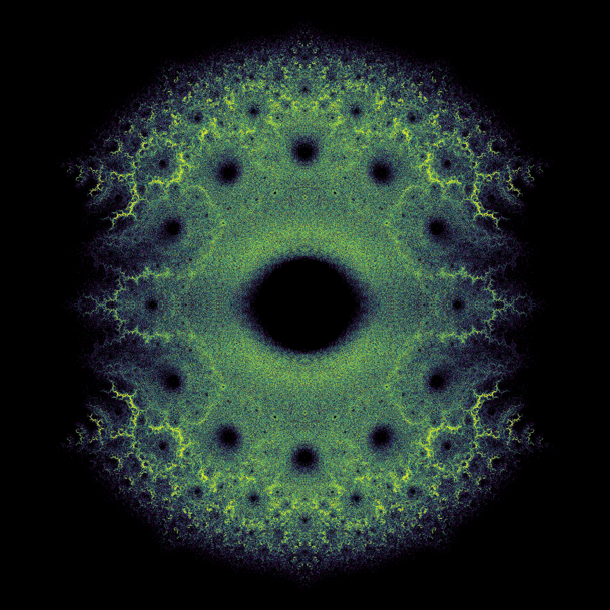
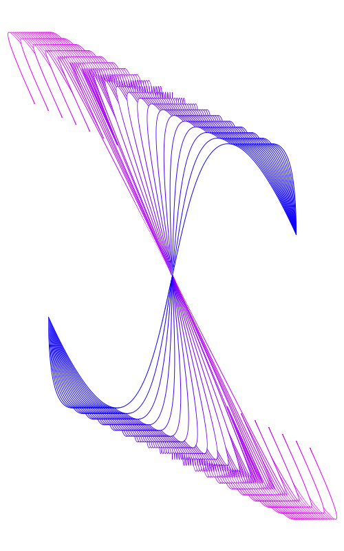
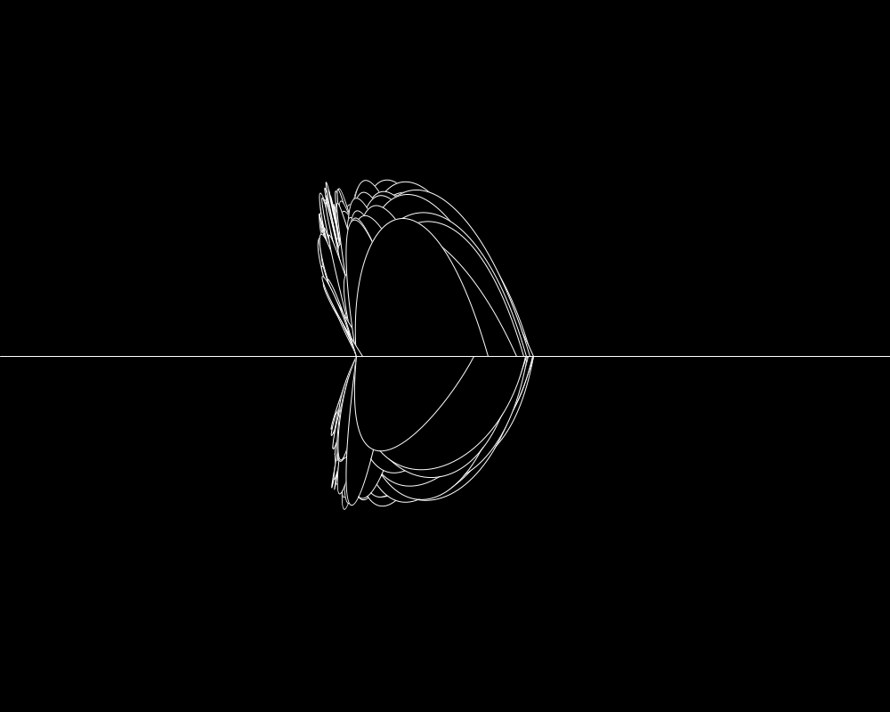
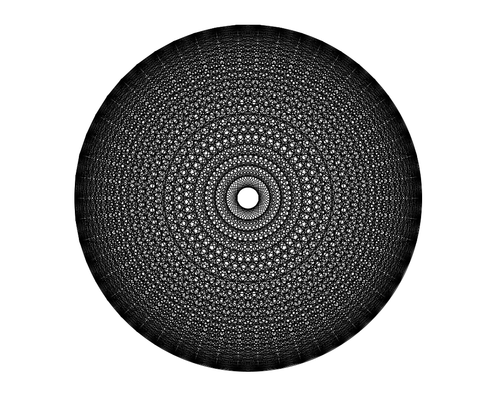

“After a certain high level of technical skill is achieved, science and art tend to coalesce in esthetics, plasticity, and form. The great scientists are artists as well.”1
Bohemian Matrices

Bezier Curves
Splines
Mandala
1. By contraposition, the author of this site is surely a bad scientist.